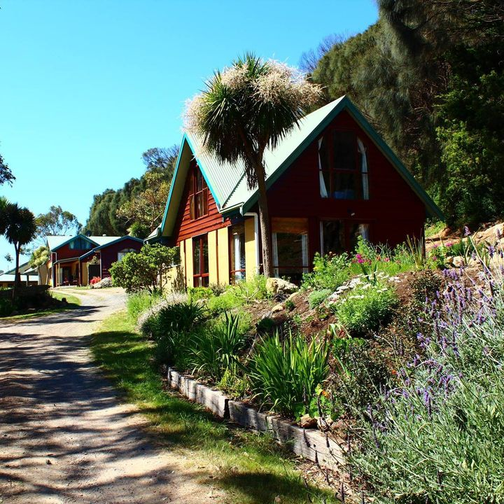
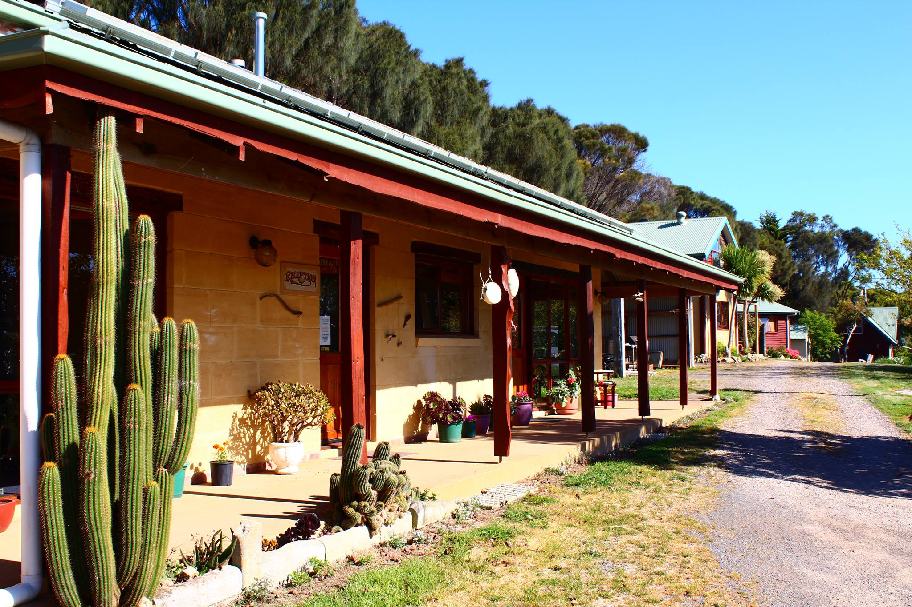
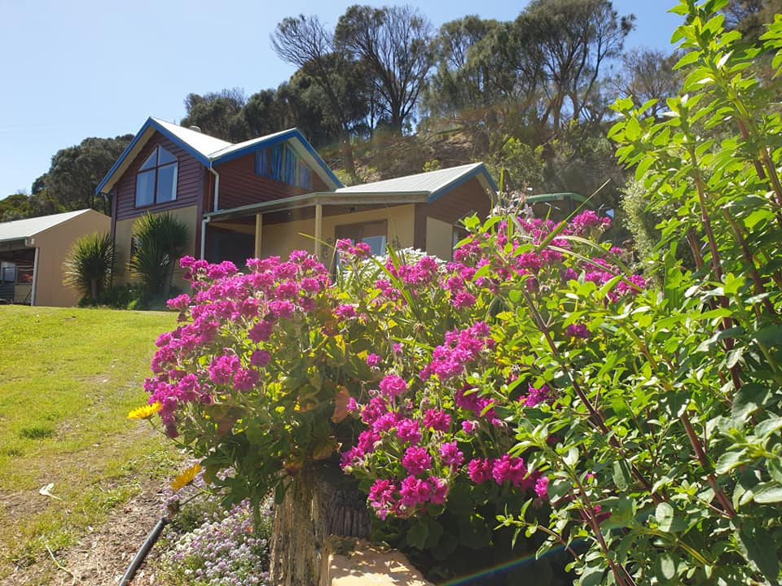
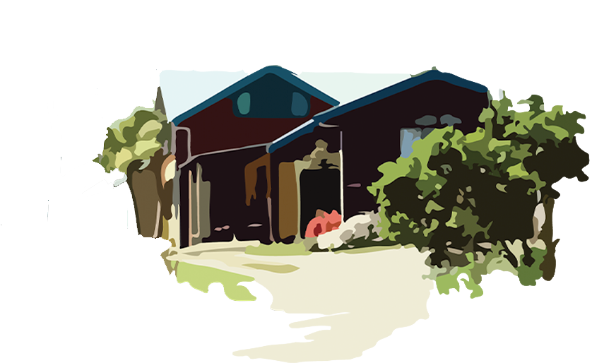
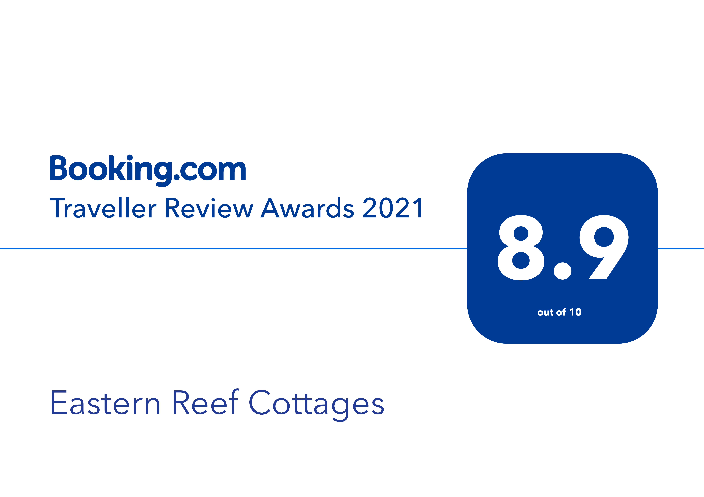

Welcome to Eastern Reef Cottages
A Family run Accomodation Business in Port Campbell.



Welcome to Eastern Reef Cottages, Port Campbell accommodation in the heart of the Shipwreck Coast and
home of the 12 Apostles, Great Ocean Road. >We are located exactly 1 km from the town’s centre and Port
Campbell Bay.
Established in 1992, we take great pride in offering you quality, affordable accommodation in five self
contained cottages each with individual, creative and eco friendly designs crafted from Earth and
reclaimed timbers.

Why us?
Welcome to Eastern Reef Cottages, Port Campbell accommodation in the heart of the Shipwreck Coast and
home of the 12 Apostles, Great Ocean Road. We are located exactly 1 km from the town’s centre and Port
Campbell Bay.
Established in 1992, we take great pride in offering you quality, affordable accommodation in five self
contained cottages each with individual, creative and eco friendly designs crafted from Earth and
reclaimed timbers.
